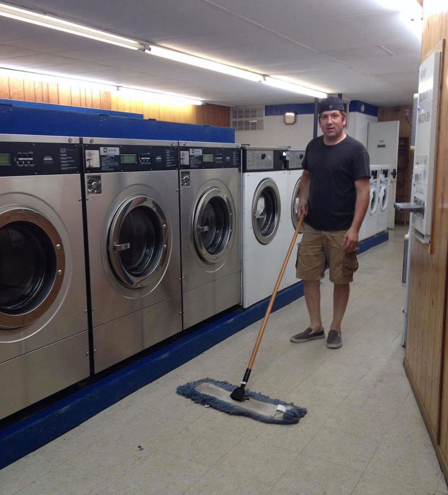

About Us
We are a family-owned business committed to giving our customers a safe and affordable option to get their laundry needs met. Enjoy our quiet and clean environment. Our prices for self-service laundry and our wash and fold service are the lowest in the area. We love and appreciate our customers and try to respond to any of their needs as quickly as we can.
Somos una empresa familiar comprometida a brindar a nuestros clientes una opción segura y asequible para satisfacer sus necesidades de lavandería. Disfruta de nuestro ambiente tranquilo y limpio. Nuestros precios para la lavandería de autoservicio y nuestro servicio de lavado y plegado son los más bajos del área. Amamos y apreciamos a nuestros clientes e intentamos responder a cualquiera de sus necesidades lo más rápido posible.
Peb yog ib tsev neeg ua lag luam cog lus rau kev muab kev nyab xeeb thiab pheej yig rau peb cov neeg siv kom tau txais kev xav ntxhua khaub ncaws. Txaus siab rau peb lub ntsiag to thiab huv si. Peb cov nqi rau kev pabcuam tus kheej ntxhua khaub ncaws thiab peb cov kev pabcuam ntxuav thiab quav yog qhov qis tshaj hauv cheeb tsam. Peb hlub thiab txaus siab rau peb cov neeg siv khoom thiab sim teb rau txhua qhov ntawm lawv cov kev xav tau sai li sai tau.
Chúng tôi là một doanh nghiệp thuộc sở hữu gia đình cam kết cung cấp cho khách hàng của chúng tôi một lựa chọn an toàn và giá cả phải chăng để đáp ứng nhu cầu giặt ủi của họ. Tận hưởng môi trường yên tĩnh và sạch sẽ của chúng tôi. Giá của chúng tôi cho dịch vụ giặt là tự phục vụ và dịch vụ giặt và gấp của chúng tôi là thấp nhất trong khu vực. Chúng tôi yêu thích và đánh giá cao khách hàng của chúng tôi và cố gắng đáp ứng bất kỳ nhu cầu nào của họ nhanh nhất có thể.
A Tribute to Our Founder
Steve was a loving husband and father, who took his desire to provide for his family very seriously. He was a hard worker, and never ran into a problem he couldn't solve. For a long time he had a dream to own a laundromat, and finally one day he told Rebecca he had found the one. They were very excited to purchase this place and begin to fulfill Steve's long-time dream.
Steve dug right in to begin the work of creating a business he could be proud of. Though it was always a family effort, his dream and vision were at the heart of it all. Steve put in long hours of work and dediction to make this place into what he dreamed it could be, and he succeeded in that. From repairing machines, to creating an instant refund machine, Steve's touch can be felt all around this place. Steve's wife Rebecca now runs the business with the help of her children, who enjoy the legacy he left for them.